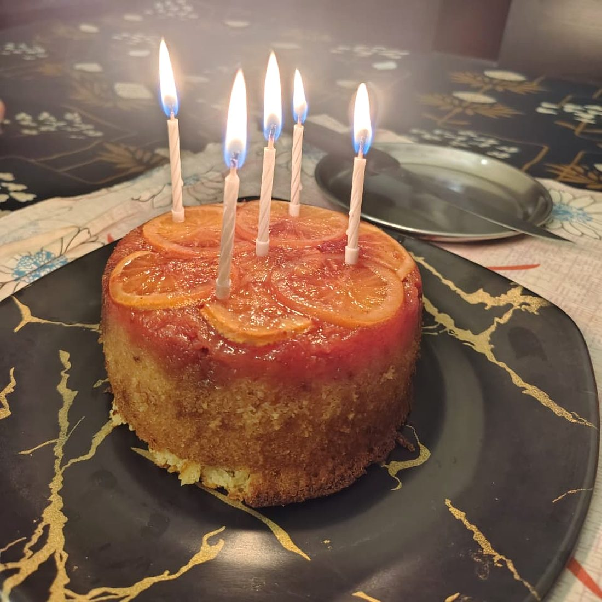

Sweet / Bombay
Orange Upside Down Mawa Cake
Spicekomla
FromWhatsApp
Tagscake · baking · dessert · orange · mawa · no-oven

Orange upside down Mawa cake recipe
- brush baking pan (patila) with ghee and line the bottom with ghee brushed paper
Caramel
- Heat together 20g amul salted butter, 75 g granulated white sugar, pinch of salt, little water till amber colored caramel forms (DO NOT STIR WITH SPOON IN BETWEEN, only swirl the pan)
- Pour in the lined baking patila
- arrange thinly sliced imported orange slices on the caramel. Keep aside
Cake batter
- In a big bowl add 60g amul salted butter (softened), 100g granulated white sugar and whisk together till combined well
- Add 1 large egg and whisk well
- Add 4-5 tbsp orange juice and jest of half an orange and mix well
- Crumble and add 125g Amul khoya (mawa) and whisk till well incorporated and smooth
- Add 120g Dahi and mix well till mixture is smooth
- Add 125 g maida, 2g baking soda, 4 g baking powder and combine gently
- Add 3-4 tbsp milk to loosen the mixture
Baking
- Add the cake batter to the patila with oranges and caramel and tap to level the top
- Bake uncovered in a cooker with salt and stand at 600 induction voltage for 30-40 min
- Cool cake before inverting and serving